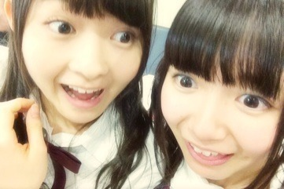

| 2014/04 27 Sun | ローテンション女。 566回目 |
お久しぶりっ
最近は収録したり撮影したり
リハーサルしたりと忙しいです！

設楽さん、まあや
お誕生日おめでとうございます

乃木ここアップされとる！
楽天アンダーライブの密着だ。
自分が歌って踊ってるときの表情って
自分が思ってる以上に違うのね
踊ることはだいすきだけど
1曲目から汗だくなって
しまわないようにとか頭の中で
いろいろな調整をします。
まあ結局ライブの興奮の汗には
勝てないんだけど。
だから全然だめだった
なんか優しすぎるというか
小さいというか
だめだこりゃ
あー反省。
でも、お客さんの歓声を
アンコールを聞いて、
見てて泣きそうでした。
引き続き頑張ります。
3日アンダーライブお楽しみに！！

ちーちゃんとご飯行ったときっ
ご飯食べてるから全くしゃべらない。
2人でもぐもぐ食べてた。
ちーちゃんは冷静。
また行きたい

あああああ
プリンシパル...
稽古がはじまります！！
台本読んだけど
めちゃくちゃ面白いです。
こちらも頑張ります。
えへへへへへへ

あ

えへへへへへへへへへへへ
まりか
コメント(538)
2014/04/27 11:30